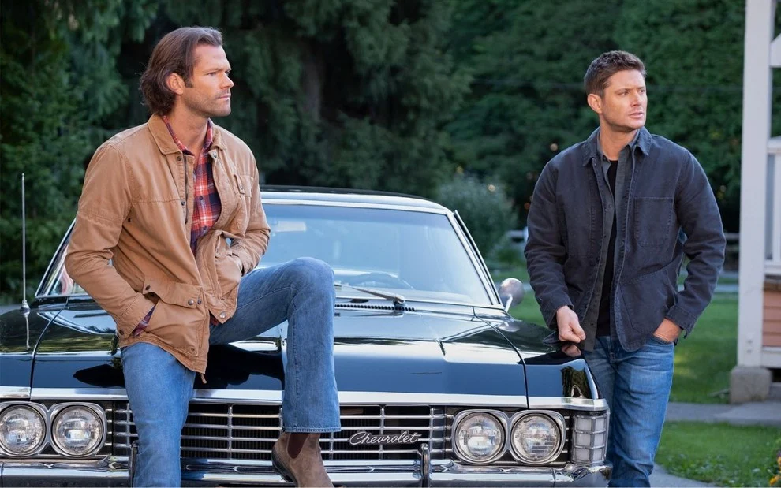

Uma série onde o gênero é indefinido com Terror, Fantasia, Ação, Aventura, Mistério e Drama. Ela foi criada por Eric Kripke em 2005, produzida pela Warner Bros. Television em parceria com a Wonderland Sound and Vision, que estreou na The WB Television Network, e depois tornou-se parte da programação da The CW, finalizando em 19 de novembro de 2020.
A família Winchester, residente de Lawrence (Kansas), passou por uma tragédia quando Mary Winchester, mãe de Sam e Dean, morreu num incêndio causado por circunstâncias sobrenaturais. Como resultado, o seu pai, John, dedicou a sua vida a viajar por todo o país para tentar descobrir o que causou a morte da sua mulher e procurar vingança. Ele levou os seus filhos consigo, treinando-os para lutar contra o mal. Anos mais tarde, Dean continuou com John para o ajudar, enquanto Sam os deixou para estudar na Universidade Stanford. Quando o seu pai desaparece de repente, Dean pede ajuda a Sam para o encontrar, e desde então os irmãos trilham uma jornada.
Para interpretar os dois personagens protagonistas de Supernatural, os irmãos Sam e Dean Winchester, a escolha deu-se aos atores Jared Padalecki e Jensen Ackles